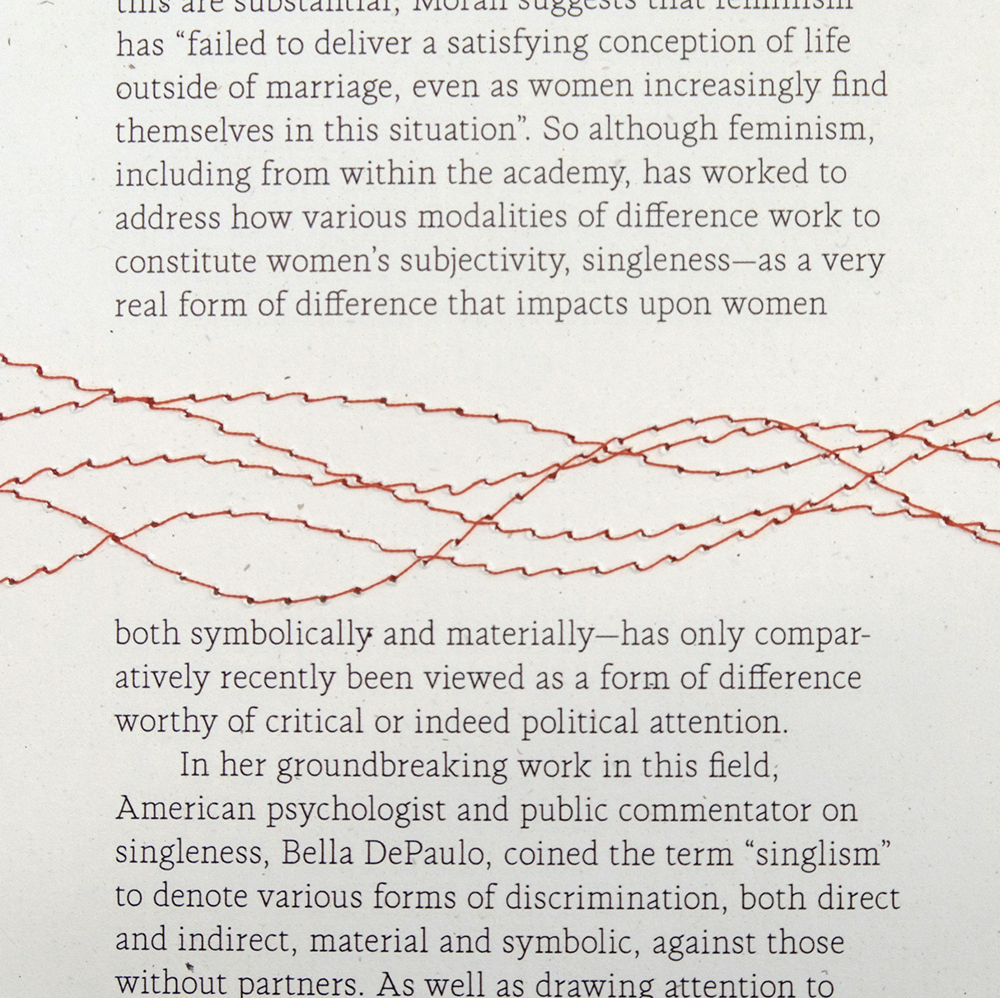
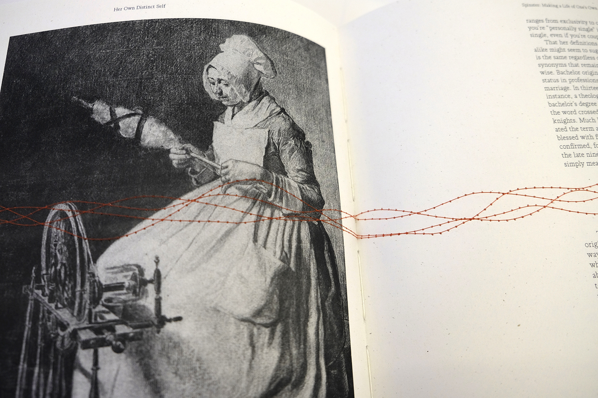
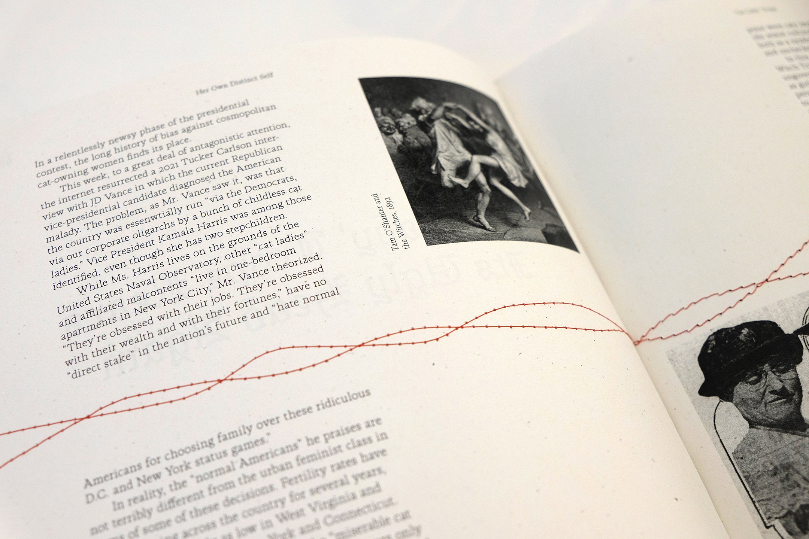
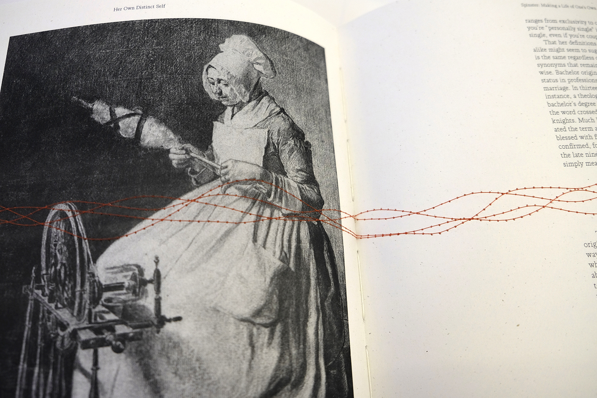
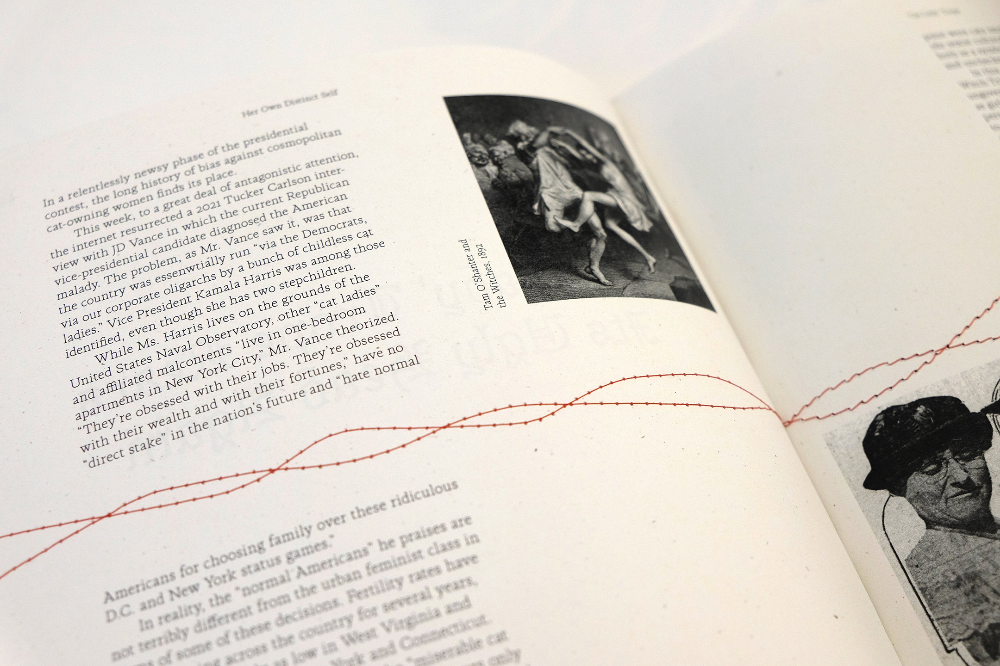

Her Own Distinct Self
April 2024
Typography, Book Binding
Created for my final capstone project at Parsons School of Design, Her Own Distinct Self is a 128 page case-bound book that examines the power of the modern spinster. Physical stitches throughout the book reference textile work and tie traditional roles of women to an emotional response to the content of each chapter. Typefaces reference lettering from embroidery samplers and type-writer written recipe cards as means by which women passed knowledge of domestic skills on to each other.

Carefully selected texts and images explain the patriarchal structures and challenges faced by single women as well as their growing power as an economic and political force.

Each sheet of paper was stitched on a sewing machine with a growing then decreasing number of stitches per page to reflect the emotions invoked by each chapter.
 


